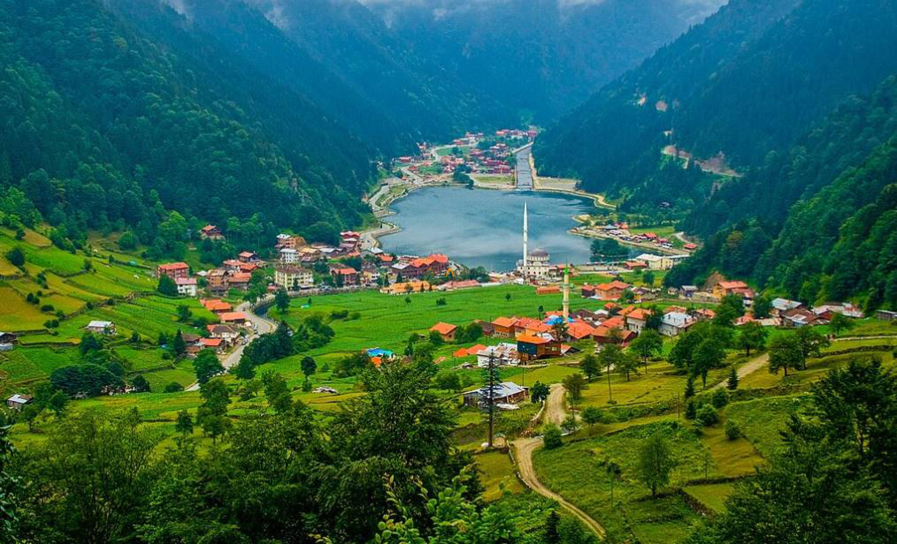
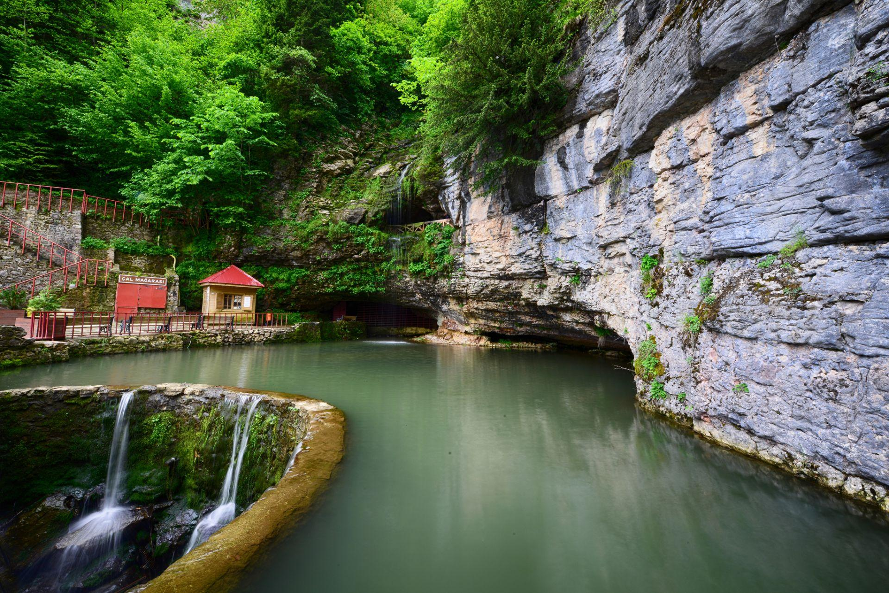
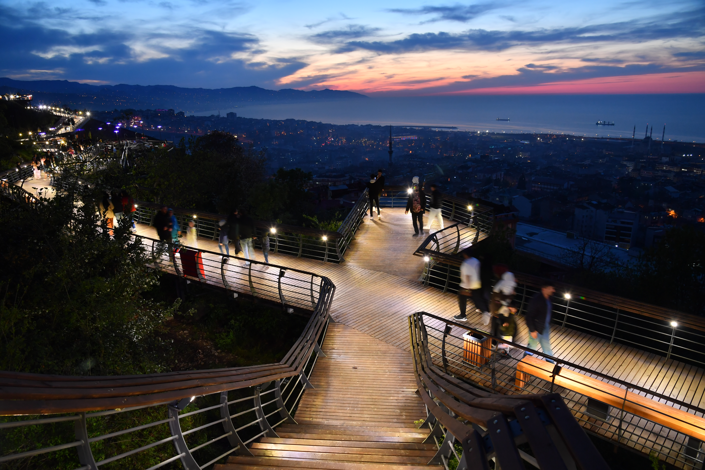

Trabzon’daki Doğal Güzellikler

Uzungöl
Trabzon’un en ünlü doğal güzelliklerinden biri olan Uzungöl, büyüleyici manzarasıyla ziyaretçileri etkiler.
Konum: Çaykara/Trabzon
Aktiviteler: Yürüyüş, bisiklet, fotoğrafçılık, doğa turu
Giriş: Ücretsiz

Sümela Manastırı & Altındere Vadisi
Manastırın bulunduğu Altındere Vadisi Milli Parkı, hem tarihi hem doğal güzellikleriyle göz kamaştırır.
Konum: Maçka/Trabzon
Aktiviteler: Doğa yürüyüşü, kamp, manzara izleme
Giriş: Milli park giriş ücreti uygulanır

Çal Mağarası
Dünyanın en uzun mağaralarından biri olan Çal Mağarası, içinde akan dereyle benzersizdir.
Konum: Düzköy/Trabzon
Aktiviteler: Mağara turu, doğal yapı inceleme
Giriş: Ücretli (makul fiyatlı)

Boztepe
Şehir merkezine yakın konumda bulunan Boztepe, muhteşem manzarasıyla özellikle gün batımında tercih edilir.
Konum: Ortahisar/Trabzon
Aktiviteler: Çay bahçelerinde oturma, fotoğraf çekme
Giriş: Ücretsiz